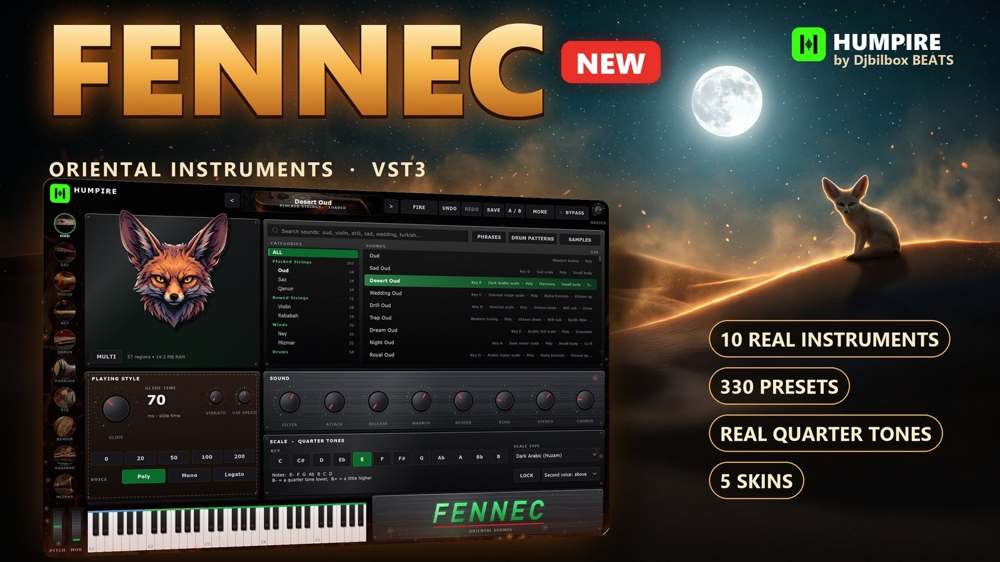
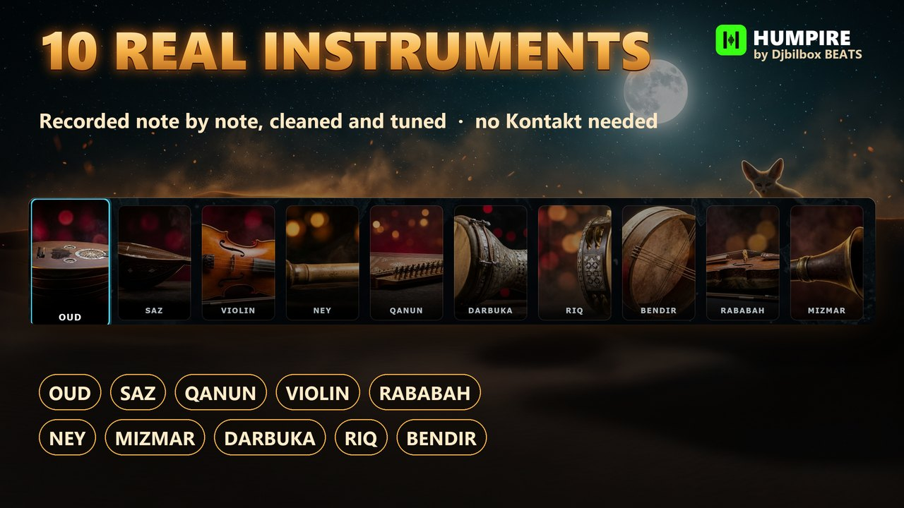
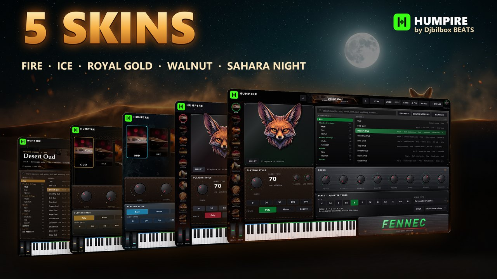

FENNEC
Oriental Instruments VST3 Plugin — Oud, Saz, Qanun, Violin, Ney, Mizmar, Darbuka

$49
Get FENNEC on GumroadThe oriental orchestra in your DAW. Pick a scale and FENNEC plays real quarter tones for you. Slide between notes like a real player, stack instruments into a full band, and drop ready-made phrases straight into your beat.
- 10 real instruments — oud, saz, qanun, violin, rababah, ney, mizmar, darbuka, riq and bendir, recorded note by note, cleaned and tuned
- 330 presets — clear names sorted by family, every preset played differently: tremolo, slides, trills, octaves, 808, lo-fi, bands and layers
- Real quarter tones — 16 Arabic and Turkish scales (Rast, Bayati, Saba, Hijaz, Nahawand, Kurd...), Scale Lock: no wrong notes
- Phrases and drum patterns — ready-made phrases synced to your tempo and a 16-step darbuka and riq sequencer
- 5 skins — FIRE, ICE, ROYAL GOLD, WALNUT and SAHARA NIGHT, each with its own layout and animated effect
- No Kontakt needed — VST3 and standalone for Windows 10/11, royalty-free for your commercial music


About the developer. HUMPIRE is a one-person, independent studio: a self-taught beatmaker who builds his own plug-ins with JUCE and CMake. The installer is not code-signed yet, so Windows SmartScreen may say "unknown publisher": click More info, then Run anyway. Every update is free for buyers.